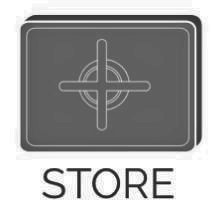
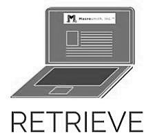

|
In the United States, businesses spend more than
$120 billion a year on printed forms,
most of which are outdated in just three months.
Electronic document management is a simple alternative
to paper filing systems.
|
|
|  |
Every business, no matter how small, needs a way to manage their records.
Paper filing systems take up large amounts of space,
are difficult to search through, and can become expensive to upkeep.
By switching to an electronic document management system,
you can save time, money, and hassle.
|
|
|  |
MacroFile, our electronic document management system,
turns your paper records into researchable and editable PDF files.
All you have to do is scan the document;
your documents are safely stored and
can be accessed from any secure server. |
|